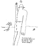
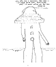
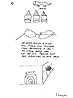

Components of a 20th Century Romance(click on small image to view the full page) 3 4 5
WORKING NOTES FROM SUE GANGEL
An attraction to enigma, "holes" in reality, a linguistics of appearance is why I want to invent. . . the process of tracking perceptions. . . index, icon, code. . . the inapplicability of logic. . . a place where pictures and emotional states (words) will intersect. . . an algebra of the soul, where time progresses in aerial views. . . I want a fabric for my myths--tents, ghosts, robes, tattoos, teepees--one which cannot be limited to any single dimension. I encounter language through visual alphabets, personal hieroglyphs of figures, symbols, objects, settings which plot the action of a shadow rising to form a mirror of itself.
go to this issue's table of contents
|